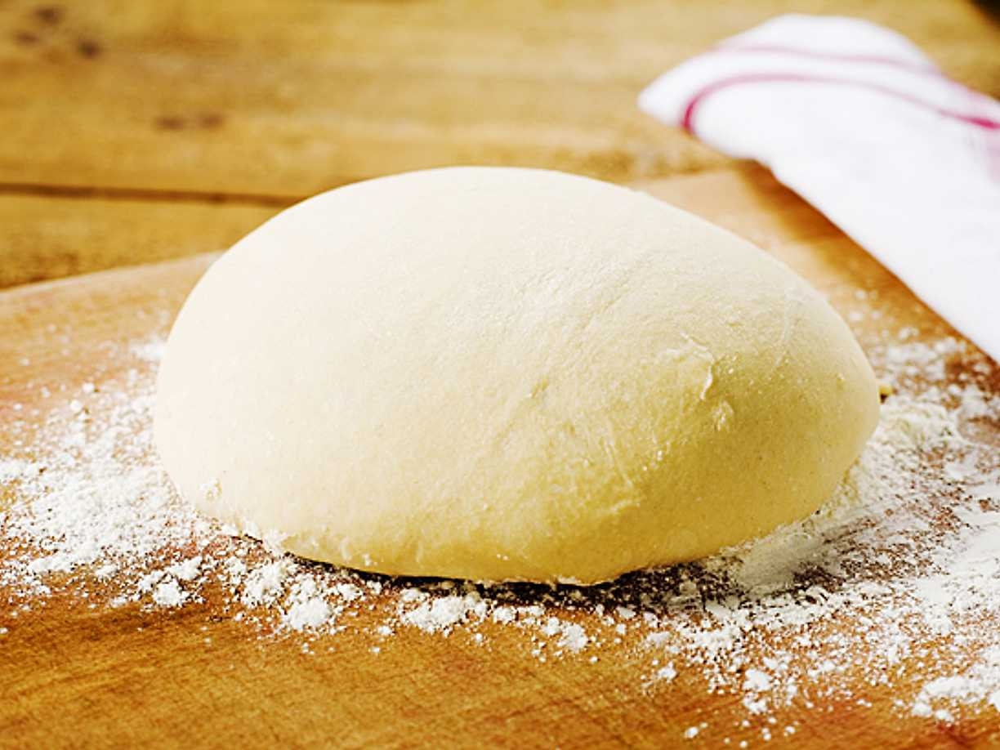

Tillbaka till receptsidan:
Länk tillbaka till receptsidan
Pizzadeg

Beskrivning
Gör din egen pizzadeg istället för att köpa färdig. Det är enklare än du tror och mycket godare.
Den här pizzadegen med jäst och vetemjöl är smidig att kavla ut tunt och är grunden till en riktigt god pizza. Degen räcker till 4 stora pizzor.
Ingredienser
- 50 g jäst
- 5 dl ljummet vatten max 37°
- 1/2 dl smör- och rapsolja
- 12 dl vetemjöl
- 1 tsk flingsalt
Intruktioner
- Smula jästen i en degbunke
- Tillsätt vatten, smör-&rapsolja, mjöl och salt. Arbeta till en smidig och blank deg, gärna i maskin
- Täck över degen med plastfolie och låt jäsa ca 45 min
- Sätt ugnen på 225° eller 200° varmluft
- Ställ in en plåt i ugnen så den blir varm
- Dela degen i 4 bitar. Kavla ut på bakplåtspapper
- Toppa pizzorna med valfria ingredienser
- Dra över pizzan till den heta plåten och grädda varje pizza ca 10 min